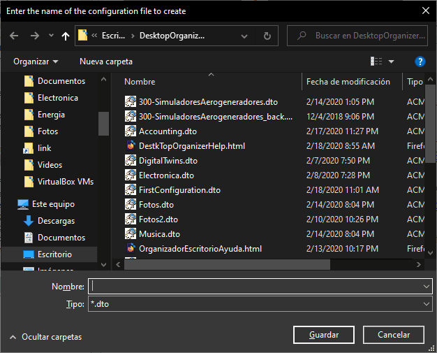
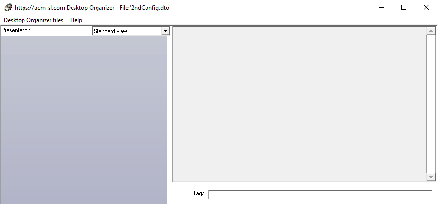

Creation of a new "configuration file"
The Desktop Organizer can be used to create a configuration file, in two ways:
- Using the "Create a new configuration file" option in the "Select what to do" form, that is shown when the application is run from its direct link in the Desktop. See Executing the application.
- Using the "Create a new configuration file" option from the "Desktop Organizer files" menu while you are visualizing/editing any "configuration file". See Description of the User Interface.
In both cases, the program will ask for the name of the new file, opening the "Enter the ". See next figure.

After entering the file name (and saving it), the application will prompt to select one of the two methods for editing, described in the next item Selection of the editor.
After that the application shows the blank form, as in the next figure:
